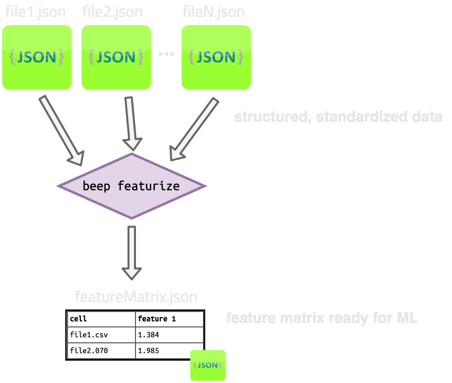

Featurize¶
Featurize (beep featurize) is a way to robustly apply many feature generation routines (featurizers) with
different hyperparameters to large sets of files (e.g., a thousand structured cycler files).
The input to beep featurize is N structured/processed json files from beep structure.
The output of beep featurize is 1 feature matrix file (no matter how many featurizers are applied). Also, optionally N x M featurizer
intermediate files for M featurizers (one for each featurizer applied to each file.)
Each row of the output feature matrix corresponds to a single cycler file:
target_matrix
capacity_0.83::TrajectoryFastCharge ... rpt_1Cdischarge_energy0.8_real_regular_throughput::DiagnosticProperties
filename ...
file1 284 ... NaN
file2 58 ... 1266.108637
file3 85 ... NaN
file4 101 ... NaN
beep featurize is used for both generating learning features (e.g., voltage under some condition) and targets such as degradation metrics (e.g., cycles to reach a specific capacity).

Featurization help dialog¶
$: beep featurize --help
Usage: beep featurize [OPTIONS] [FILES]...
Featurize one or more files. Argument is a space-separated list of files or
globs. The same features are applied to each file. Naming of output files is
done automatically, but the output directory can be specified.
Options:
-o, --output-filename FILE Filename to save entre feature matrix to. If
not specified, output filewill be named with
FeatureMatrix-[timestamp].json.gz. If
specified, overrides the output dir for
saving the feature matrix to file.
-d, --output-dir DIRECTORY Directory to dump auto-named files to.
-f, --featurize-with TEXT Specify a featurizer to apply by class name,
e.g. HPPCResistanceVoltageFeatures. To apply
more than one featurizer, use multiple -f
<FEATURIZER> commands. To apply sets ofcore
BEEP featurizers, pass either 'all_features'
for all features or'all_targets' for all
targets (features which can be used as
targets). Note if 'all_features' or
'all_targets' is passed, other -f
featurizers will be ignored. All feautrizers
are attempted to apply with default
hyperparameters; to specify your own
hyperparameters, use --featurize-with-
hyperparams.Classes from installed modules
not in core BEEP can be specified with the
class name in absolute import format, e.g.,
my_package.my_module.MyClass.
-h, --featurize-with-hyperparams TEXT
Specify a featurizer to apply by class name
with your own hyperparameters.(such as
parameter directories or specific values for
hyperparametersfor this featurizer), pass a
dictionary in the format:
'{"FEATURIZER_NAME": {"HYPERPARAM1":
"VALUE1"...}}' including the single quotes
around the outside and double quotes for
internal strings.Custom hyperparameters will
be merged with default hyperparameters if
the hyperparameter dictionary is
underspecified.
--save-intermediates Save the intermediate BEEPFeaturizers as
json files. Filenames are autogenerated and
saved in output-dir if specified; otherwise,
intermediates are written to current working
directory.
--help Show this message and exit.
Specifying input¶
The inputs for beep featurize are structured json output files from beep structure; Alternatively, structured data serialized with BEEPDatapath in python will also work.
Files can be globbed.
Specifying outputs¶
The beep featurize command outputs a feature matrix as its required sole output. This file will
be auto-named if --output-filename is not specified.
To include saving of intermediate featurizer files, use the --save-intermediates flag. These files will be auto-named and put into the CWD if --output-dir is not set.
Specifying --output-dir overrides --output-filename and will save all files (including intermediates) into this directory with automatic naming.
Selecting featurizers to apply¶
Featurizers in BEEP¶
beep featurize works with "core" features in BEEP.
To use one with default hyperparameters, use the --featurize-with or -f option with the class name of the featurizer you'd like to use.
For example, to apply the HPPCResistanceVoltageFeatures and CycleSummaryStats featurizers,
You can apply the full set of featurizers for generating learning features by passing --featurize-with all_features:
Similarly, for features from which degradation targets can be derived, pass --featurize-with all_targets
Note passing all_features or all_targets will override any other --featurize-with classes.
Featurizers with custom hyperparameters¶
To use custom hyperparameters in beep featurize, pass each featurizer + hyperparameter set with --featurize-with-hyperparams or -h.
Each featurizer should be passed in dictionary format with one or more valid hyperparameters defined, like this:
$: beep featurize -h '{"HPPCResistanceVoltageFeatures":{"diag_pos": 1, "soc_window": 8}}' my_structured_file.json
Hyperparameters not specified will be merged with the default hyperparameter dictionary defined for each featurizer. Consult the source code for full specifications of each hyperparameter dictionary for any featurizer.
To apply multiple featurizers with custom hyperparameters (even the same featurizer class with different hyperparameters), simply use multiple separate --featurize-with-hyperparams options:
$: beep featurize -h '{"HPPCResistanceVoltageFeatures":{"diag_pos": 1, "soc_window": 8}}' \
-h '{"HPPCResistanceVoltageFeatures":{"diag_pos": 47, "soc_window": 10}}' \
-h '{"DiagnosticSummaryStats": {"test_time_filter_sec": 1e4}}' \
my_structured_file.json
Your own featurizers¶
beep featurize also works with external featurizers than inherit the BEEPFeaturizer class.
Instead of using the class name to identify the featurizer, use --featurize-with* options with the full module and class name of your custom featurizer.
For example, if your featurizer inheriting BEEPFeaturizer is installed in your environment in a module my_pkg.my_module.my_submodule.MyClass, do:
Similar to the core featurizers, calling external featurizers with --featurize-with will call them with the default hyperparameters. Using custom
hyperparameters should use the same format as --featurize-with-hyperparams, a dictionary with the only key being the fully specified class name
and the value being a dictionary of hyperparameters to override:
$: beep featurize -h '{"my_pkg.my_module.my_submodule.MyClass": {"my_hp1": 12}}' \
my_structured_file.json
Any number of external featurizers can be used alongside any number of builtin featurizers in the same command by passing multiple --featurize-with options: